W00-admin-login — Trang đăng nhập quản trị
Admin · 2026-10-26T15:19:33.849000+07:00
Nguồn và checksum
https://manager.zney295.id.vn/company/login
51b806904c758f08c25675eaa305547670f1e0ac2ac79bc062343ac98072346bW01-employee-login — Trang đăng nhập nhân viên
Employee · 2026-10-26T15:20:53.689000+07:00
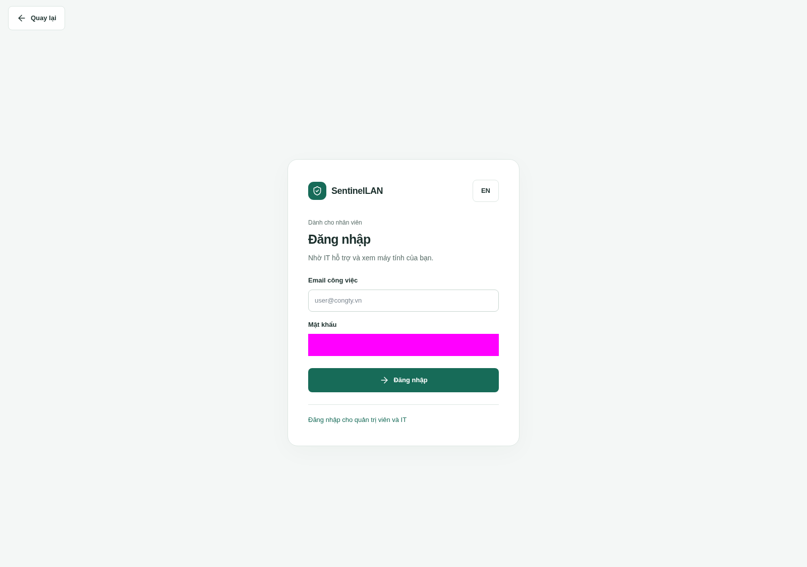
Nguồn và checksum
https://manager.zney295.id.vn/employee/login
7a339e9aac53810b0bd060ff92114dca54e386b8dd90c642fc929d8547018953W02-admin-dashboard — Tổng quan quản trị trên hệ thống production
Admin · 2026-10-26T15:23:17.670000+07:00
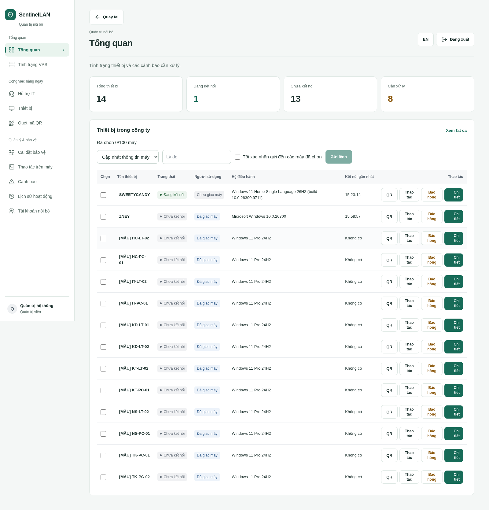
Nguồn và checksum
https://manager.zney295.id.vn/company/dashboard
e36e52fe9a42e2d74faa1b4d4940e0233287639f3c2643247ab207acd09961b3W03-admin-device-list — Thiết bị SWEETYCANDY đang kết nối trước phân công
Admin · 2026-10-26T15:23:49.622000+07:00
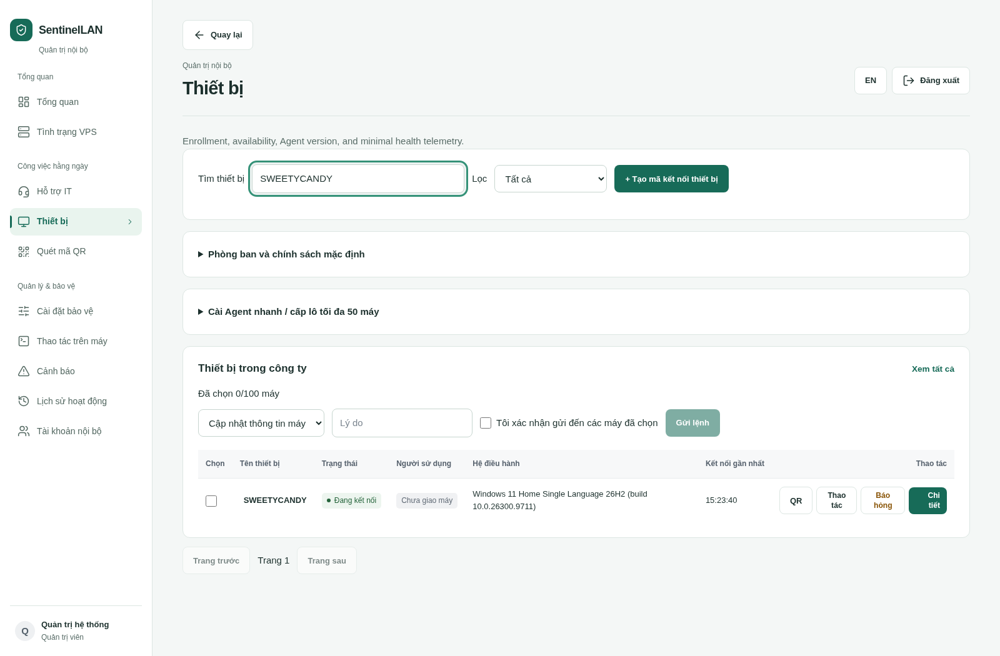
Nguồn và checksum
https://manager.zney295.id.vn/company/devices
67075dcf19a787a743884f2fd617cbb1fcd3a3df2453843aa64ccafedfda4062W04-admin-device-hardware — Thông tin phần cứng và bảo vệ thiết bị SWEETYCANDY
Admin · 2026-10-26T15:25:28.457000+07:00
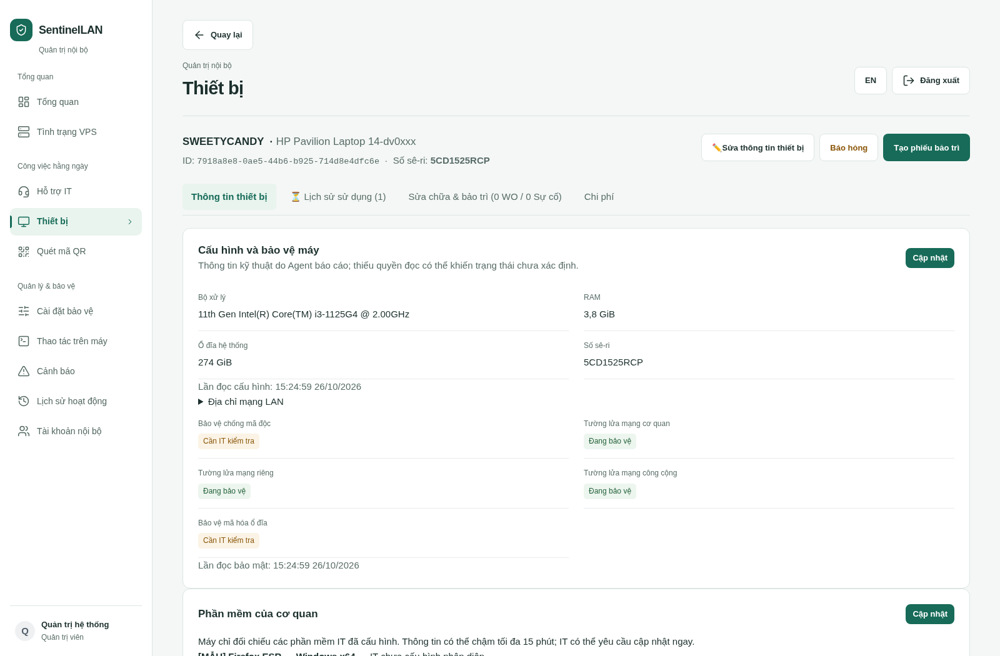
Nguồn và checksum
https://manager.zney295.id.vn/company/devices/7918a8e8-0ae5-44b6-b925-714d8e4dfc6e
038036e6a31f4cbed3ed627a3cd59696aa0dc5e7259c1c8a49da3850f9fd3d8eW05-assign-device-confirmation — Xác nhận giao SWEETYCANDY cho nhân viên
Admin · 2026-10-26T15:26:39.441000+07:00
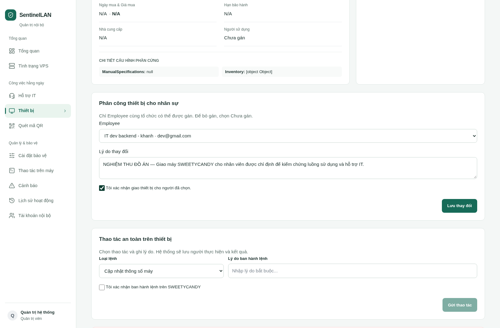
Nguồn và checksum
https://manager.zney295.id.vn/company/devices/7918a8e8-0ae5-44b6-b925-714d8e4dfc6e
4f4e9e43b6439c5d360cdcde78148ca00d787a6b1984cafacc6de667c80a3907W06-employee-before-handover — Máy ZNEY đang được giao trước khi chuyển phân công
Employee · 2026-10-26T15:27:50.491000+07:00
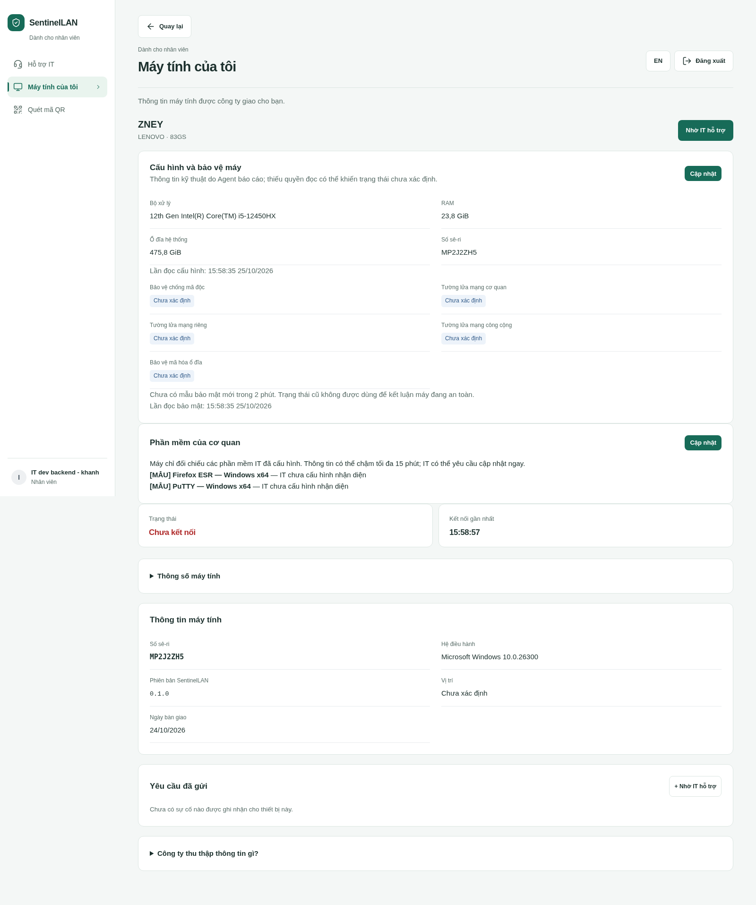
Ảnh trước thao tác; ZNEY chưa kết nối, không dùng làm bằng chứng heartbeat của SWEETYCANDY.
Nguồn và checksum
https://manager.zney295.id.vn/employee/my-device
20141bcce4c50a5a051f8314ee9b8e062fe3d30b4218d11b56342323eba25934W07-assign-sweetycandy — Form giao máy SWEETYCANDY cho Employee
Admin · 2026-10-26T15:28:21.519000+07:00
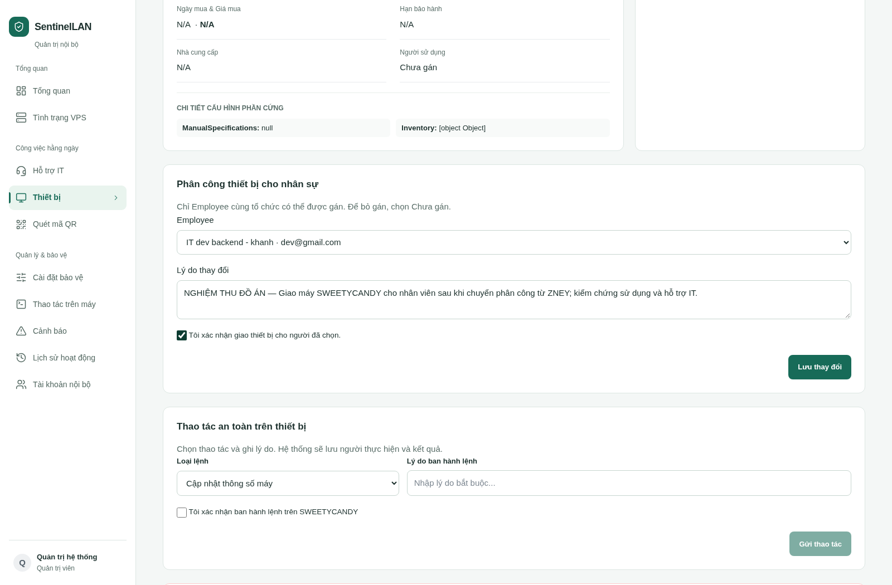
Nguồn và checksum
https://manager.zney295.id.vn/company/devices/7918a8e8-0ae5-44b6-b925-714d8e4dfc6e
0562a315b949123fb111f8b2d3146c88cba797617fbbc51bbb61989df307df19W08-admin-assigned-device — SWEETYCANDY đã được giao cho nhân viên và đang Online
Admin · 2026-10-26T15:28:53.176000+07:00
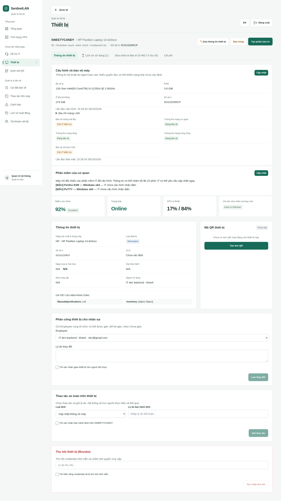
Nguồn và checksum
https://manager.zney295.id.vn/company/devices/7918a8e8-0ae5-44b6-b925-714d8e4dfc6e
ae64df0b72bb202f95a7964e500c0f34f354d2a59939ce966740e6b3fa3e4a56W09-admin-device-online — Trạng thái Online, CPU/RAM và người sử dụng của SWEETYCANDY
Admin · 2026-10-26T15:28:53.311000+07:00
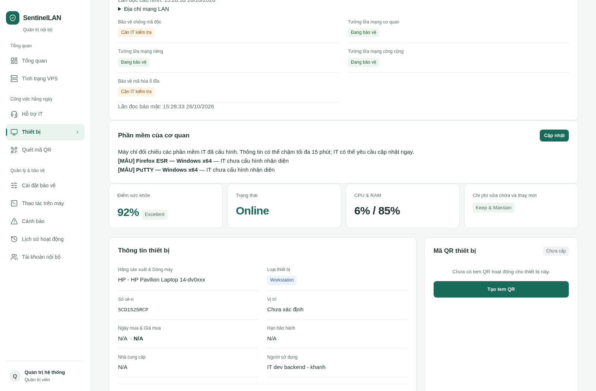
Nguồn và checksum
https://manager.zney295.id.vn/company/devices/7918a8e8-0ae5-44b6-b925-714d8e4dfc6e
87fa27c38d9bb30312b791d9fadc38414f3b12f0596cf00704134770c6c4d465W10-employee-assigned-device — Employee xem máy SWEETYCANDY vừa được giao
Employee · 2026-10-26T15:28:55.721000+07:00
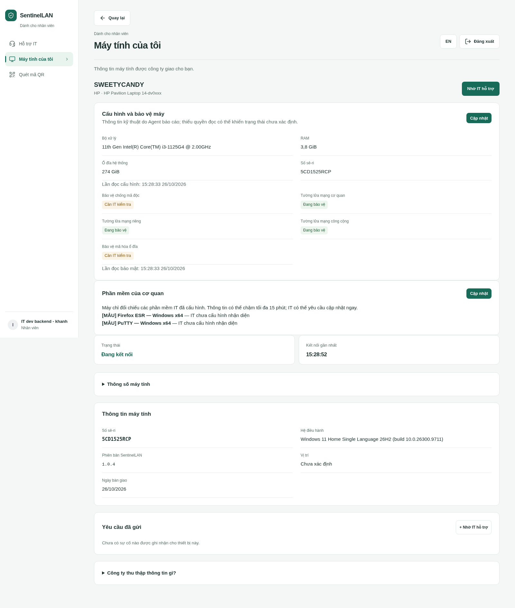
Nguồn và checksum
https://manager.zney295.id.vn/employee/my-device
91a1cd88369a0f2744f9c45cca84778aa035ab6e3e1a3b0240daaa2adee057b5W11-employee-support-home — Cổng hỗ trợ IT dành cho nhân viên
Employee · 2026-10-26T15:30:05.639000+07:00
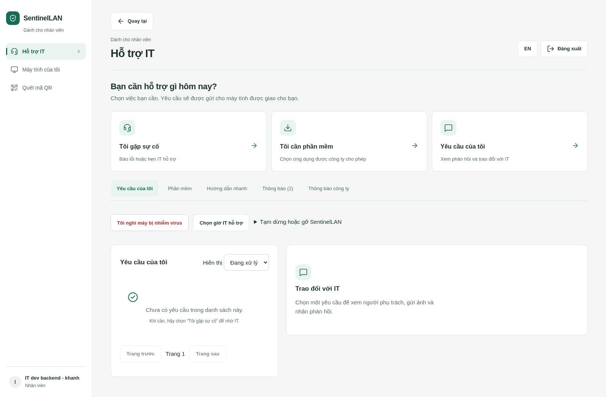
Nguồn và checksum
https://manager.zney295.id.vn/employee/support
d07819383028c2d852805f22f555219da459244df516f95ac30b5d5ea7f0dcc1W12-employee-create-request — Nhân viên mô tả yêu cầu hỗ trợ nghiệm thu trên máy được giao
Employee · 2026-10-26T15:31:02.890000+07:00
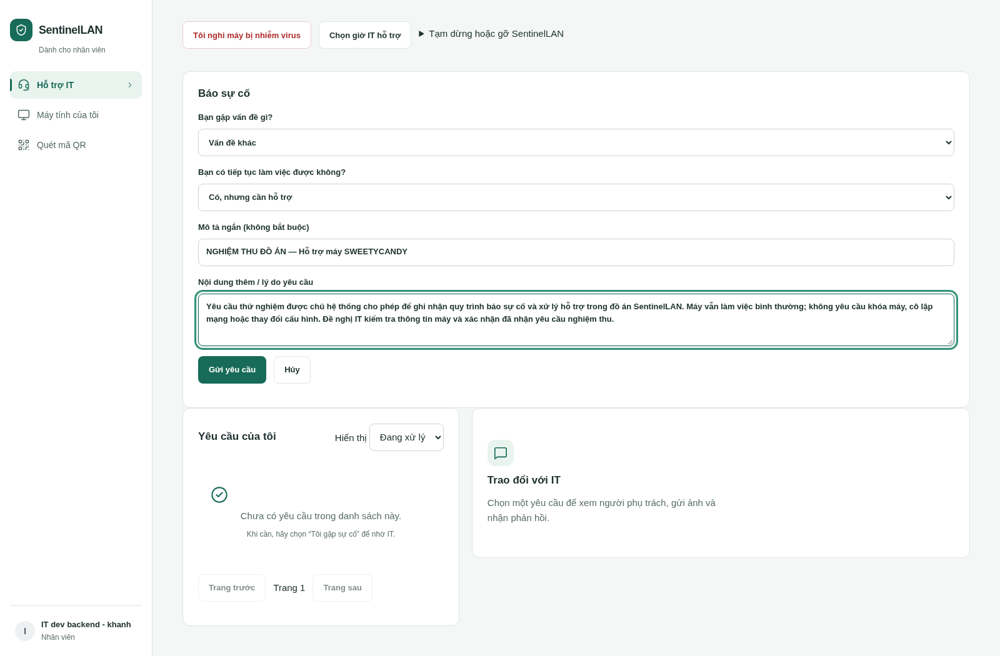
Nguồn và checksum
https://manager.zney295.id.vn/employee/support
90d91caac35c365700d236c80bc7621b99ea5a118dd35f210932b934f794346dW13-employee-request-created — Yêu cầu hỗ trợ đã tạo thành công trên SWEETYCANDY
Employee · 2026-10-26T15:31:15.284000+07:00
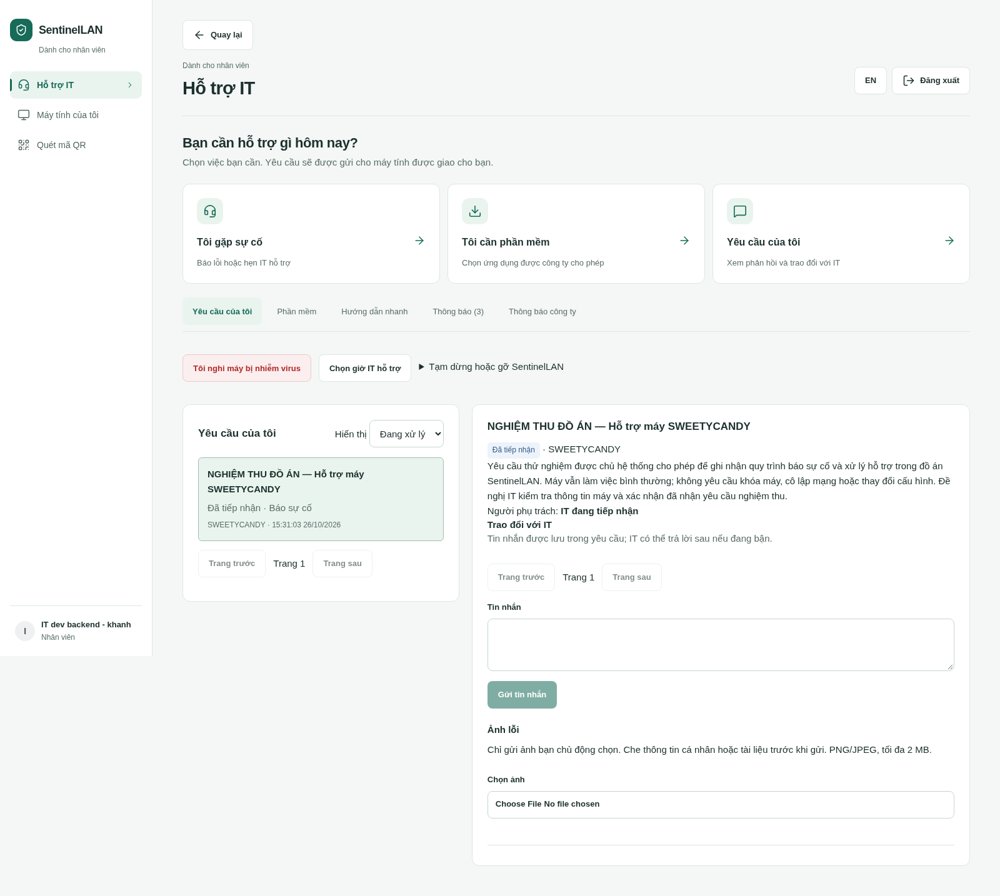
Nguồn và checksum
https://manager.zney295.id.vn/employee/support
293057956a851420ba13e561f3fa47c43655ff83a02d90bde6e5cd27913947efW14-employee-image-preview — Xem trước ảnh minh chứng và yêu cầu đồng ý trước khi gửi
Employee · 2026-10-26T15:32:26.911000+07:00
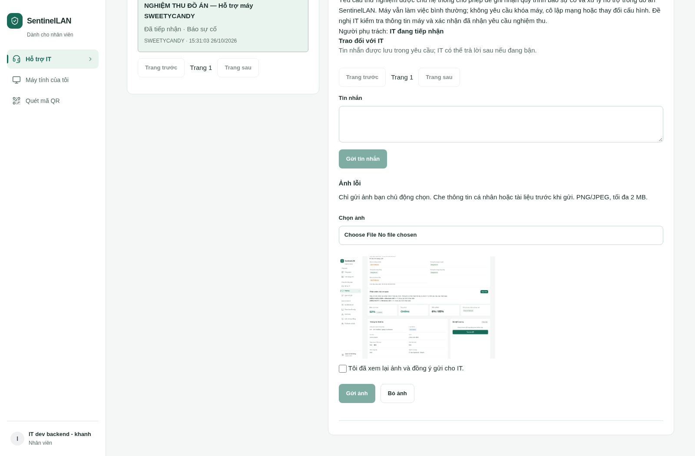
Nguồn và checksum
https://manager.zney295.id.vn/employee/support
6027857172d684529a2701d9d45d781845c3da30a0c66f26e329cedc69096d1bW15-employee-image-consent — Nhân viên xác nhận đồng ý gửi ảnh đã chọn
Employee · 2026-10-26T15:32:26.997000+07:00
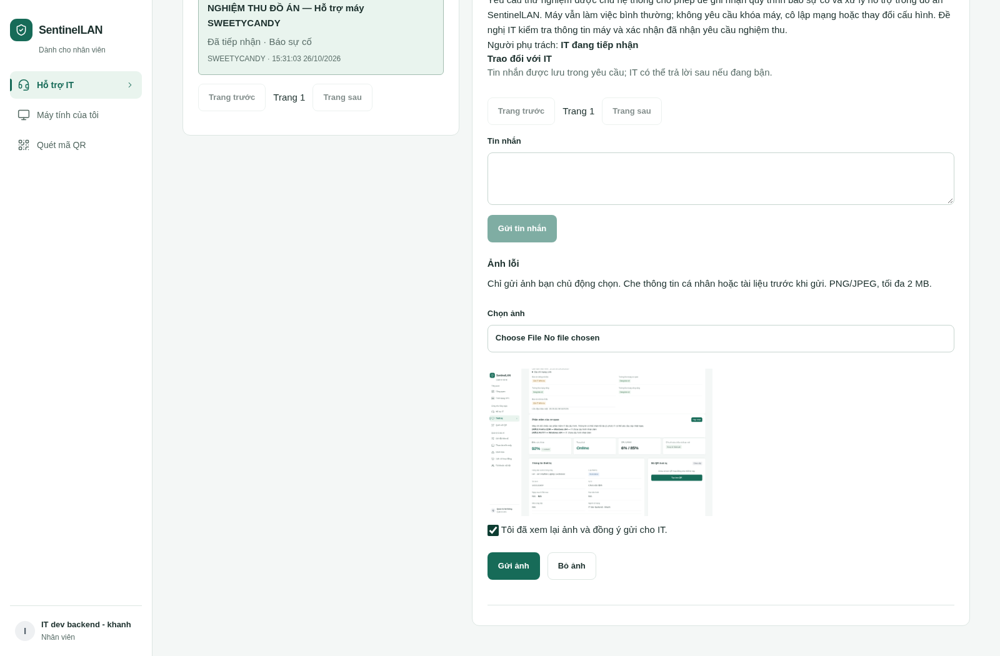
Nguồn và checksum
https://manager.zney295.id.vn/employee/support
9b9135fb8c8cfd8b88f5dd1efbe01683af7359ee756017b188804a4eee81c06cW16-employee-after-image-upload — Yêu cầu hỗ trợ sau khi gửi ảnh minh chứng
Employee · 2026-10-26T15:32:44.599000+07:00
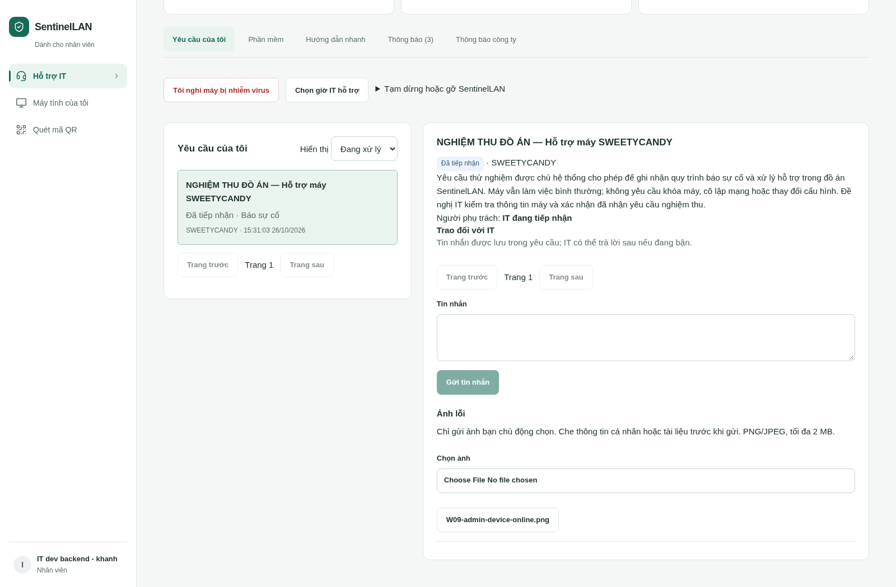
Nguồn và checksum
https://manager.zney295.id.vn/employee/support
b7858d24b61723fe28999eafb05a25b0d07313c2f1e5387f25d4e49d8e8903a3W17-admin-support-queue — Admin tiếp nhận yêu cầu hỗ trợ mới từ Employee
Admin · 2026-10-26T15:32:48.041000+07:00
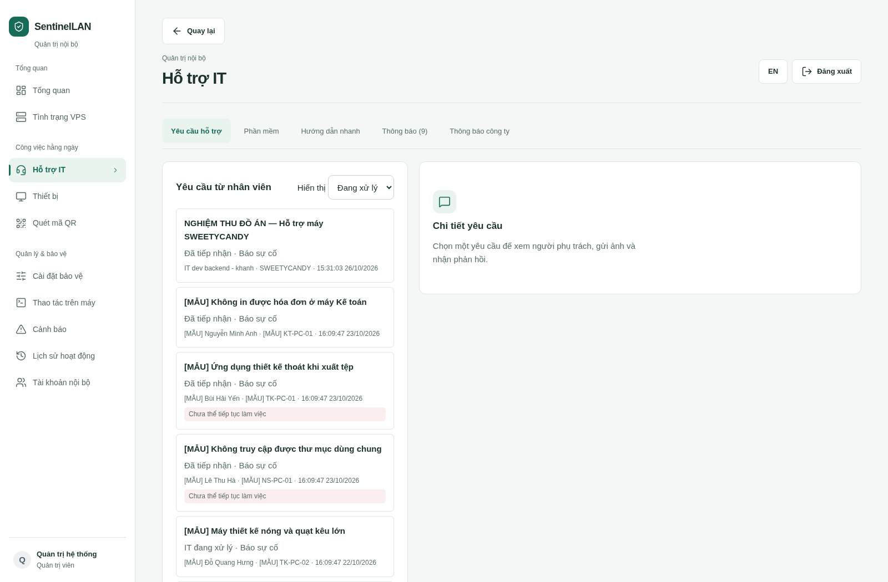
Nguồn và checksum
https://manager.zney295.id.vn/company/support
fbfec94eb119d8ebb4dcc7c298941eae553f606f76e268a4909f2874e1e2fac0W18-admin-request-triage — Admin phân công và tiếp nhận xử lý yêu cầu nghiệm thu
Admin · 2026-10-26T15:34:26.340000+07:00
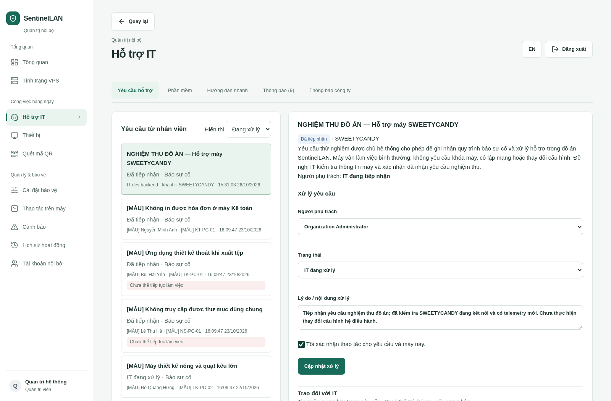
Nguồn và checksum
https://manager.zney295.id.vn/company/support
b1f6be1aefa2e10f70165f3e294211dddd4e14b88db34e9df41c628c3f3cec83W19-admin-request-in-progress — Yêu cầu nghiệm thu được Admin tiếp nhận và phân công xử lý
Admin · 2026-10-26T15:34:57.922000+07:00
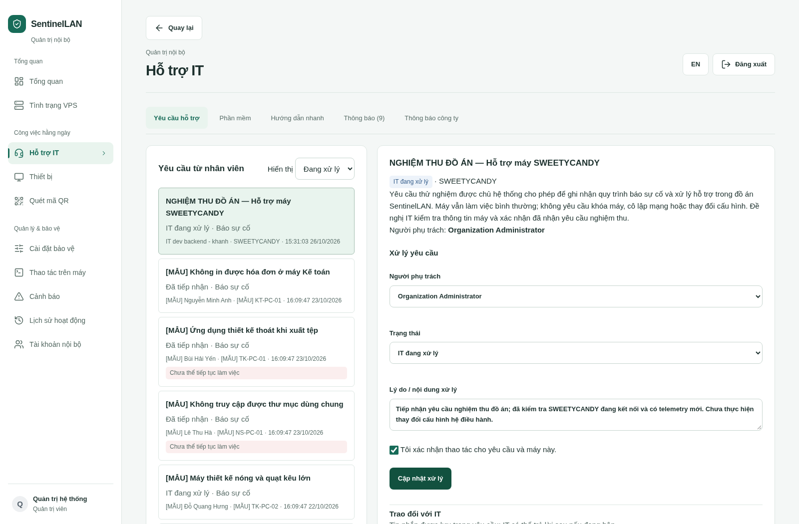
Nguồn và checksum
https://manager.zney295.id.vn/company/support
96cab194acaea7bf23c04d3409b9bfaae4ea4cbfd8afbc6949813f773614deabW20-employee-request-progress — Employee thấy trạng thái và người phụ trách sau khi IT tiếp nhận
Employee · 2026-10-26T15:35:00.212000+07:00
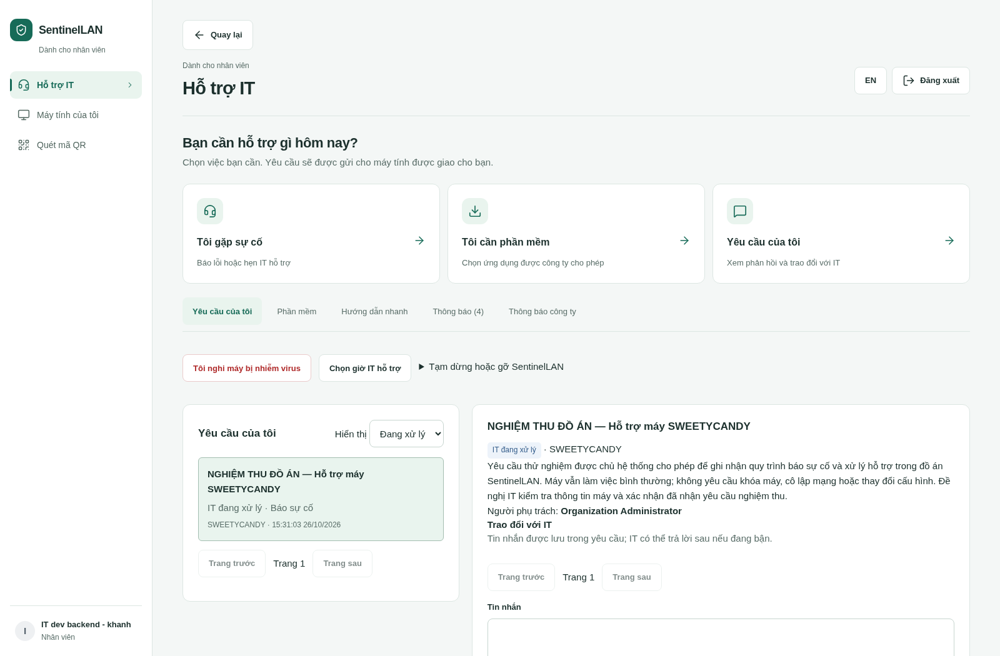
Nguồn và checksum
https://manager.zney295.id.vn/employee/support
659813af745d936426b7201c90937cd71a7f89eb0327882389a059214c542558W21-safe-telemetry-command — Xác nhận lệnh cập nhật thông số máy SWEETYCANDY
Admin · 2026-10-26T15:38:58.670000+07:00
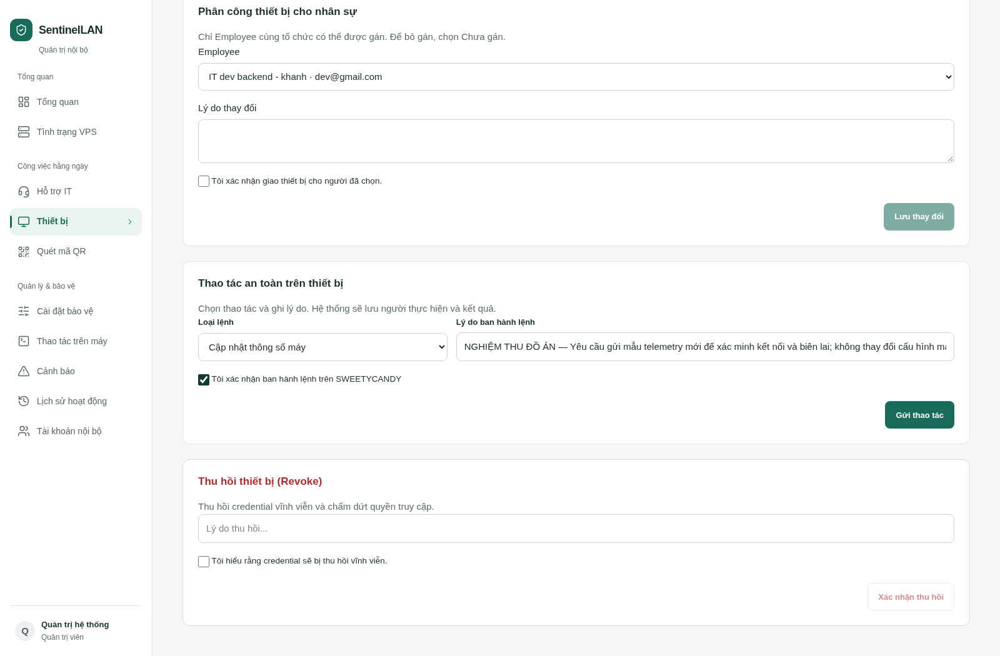
Nguồn và checksum
https://manager.zney295.id.vn/company/devices/7918a8e8-0ae5-44b6-b925-714d8e4dfc6e
09d6416f1a567b0130c1bfa4e25adeaa32b7f4fdbbbe888f8bcf9e85635385d1W22-command-success-receipt — Lệnh CollectTelemetryNow thành công và có biên lai Agent
Admin · 2026-10-26T15:41:28.407000+07:00
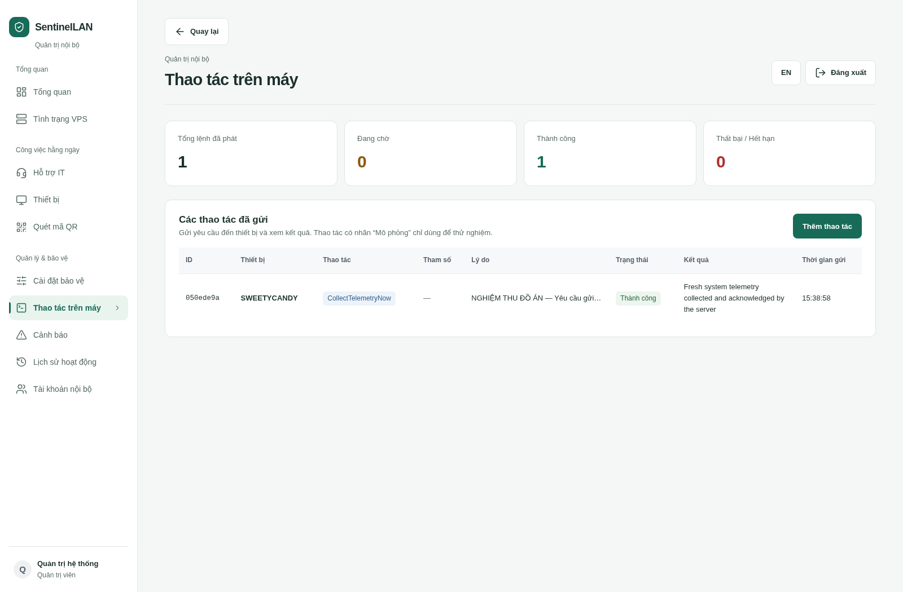
Nguồn và checksum
https://manager.zney295.id.vn/company/commands
7e7260c63bdf2862a532f7c08702a15a74a1885f3ad58b22176f4d5cc895d565W23-vps-overview — Giám sát VPS Oracle qua giao diện quản trị
Admin · 2026-10-26T15:38:59.701000+07:00
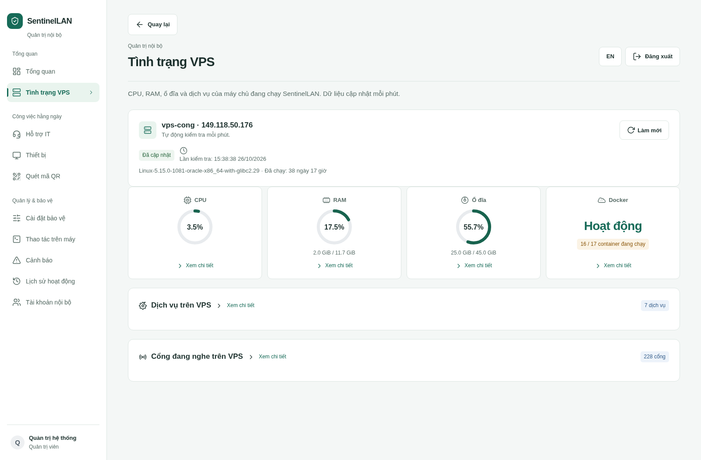
Nguồn và checksum
https://manager.zney295.id.vn/company/vps
514bf12ea5052bdd37752085a1fcf538a1a2f3697296d2a6f9db7e5425a69de4W24-vps-docker-sentinellan — Bảy container SentinelLAN trong màn hình giám sát Docker
Admin · 2026-10-26T15:42:39.566000+07:00
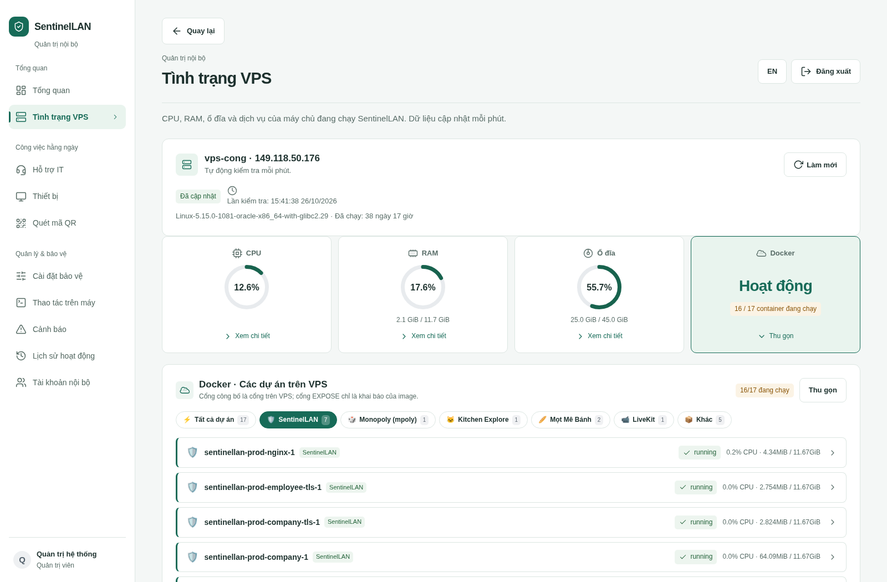
Nguồn và checksum
https://manager.zney295.id.vn/company/vps
cd911f122de752be86f36aaf000fa6322a6cf4328f0392f2f8b704954cf4f5adW25-vps-api-image — Image API trên VPS khớp commit release af4fb1d
Admin · 2026-10-26T15:43:55.578000+07:00
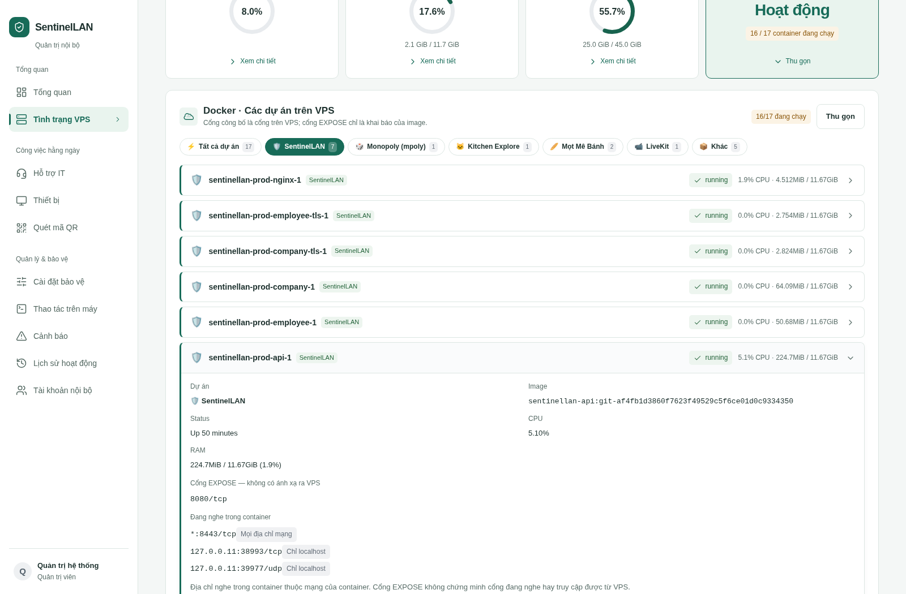
Nguồn và checksum
https://manager.zney295.id.vn/company/vps
ed6006f50545ece11598b0c7d14833d2d6ad54190dbf4281afa0f061fc374583W26-vps-services — Danh sách dịch vụ trên VPS trong chế độ giám sát
Admin · 2026-10-26T15:43:59.825000+07:00
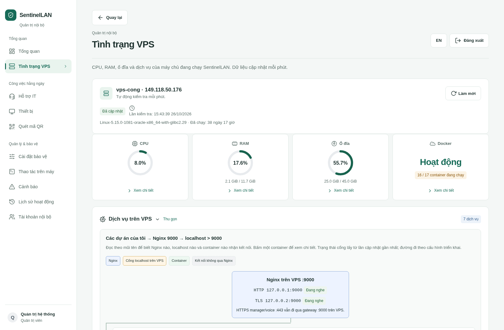
Nguồn và checksum
https://manager.zney295.id.vn/company/vps
42926008bd86399d6c8a18295c27c06ad8f96b853d8d50e5207fab718afaee10W27-vps-sentinellan-topology — Đường đi API, web và PostgreSQL trong nhánh SentinelLAN
Admin · 2026-10-26T15:45:32.486000+07:00
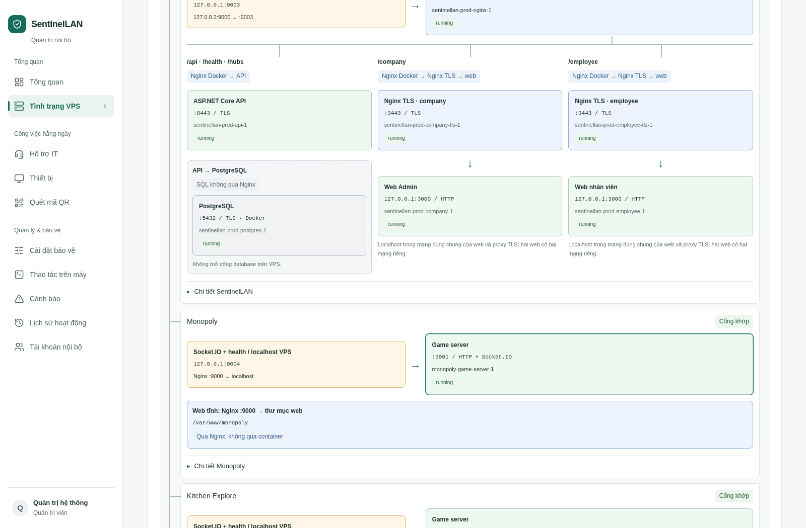
Sơ đồ theo cấu hình triển khai và snapshot do giao diện giám sát cung cấp.
Nguồn và checksum
https://manager.zney295.id.vn/company/vps
b9f2a71647599c5896095bd8b37b10e038724af9aeabfd37d960bf4a68516958W28-vps-cpu — Chi tiết CPU VPS và các container đang chạy
Admin · 2026-10-26T15:47:09.446000+07:00
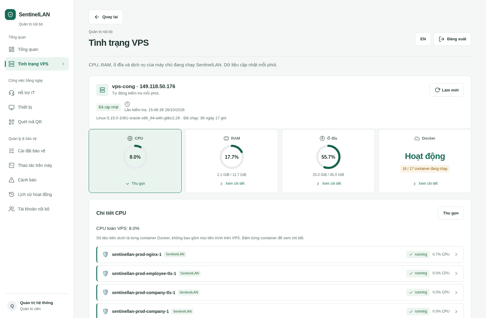
Nguồn và checksum
https://manager.zney295.id.vn/company/vps
caf8d8825480e8f8fb02e835e11bf2bcc5ab11e999bf50bbf5c083ee33b33573W29-vps-memory — Chi tiết bộ nhớ VPS và mức dùng theo container
Admin · 2026-10-26T15:47:12.672000+07:00
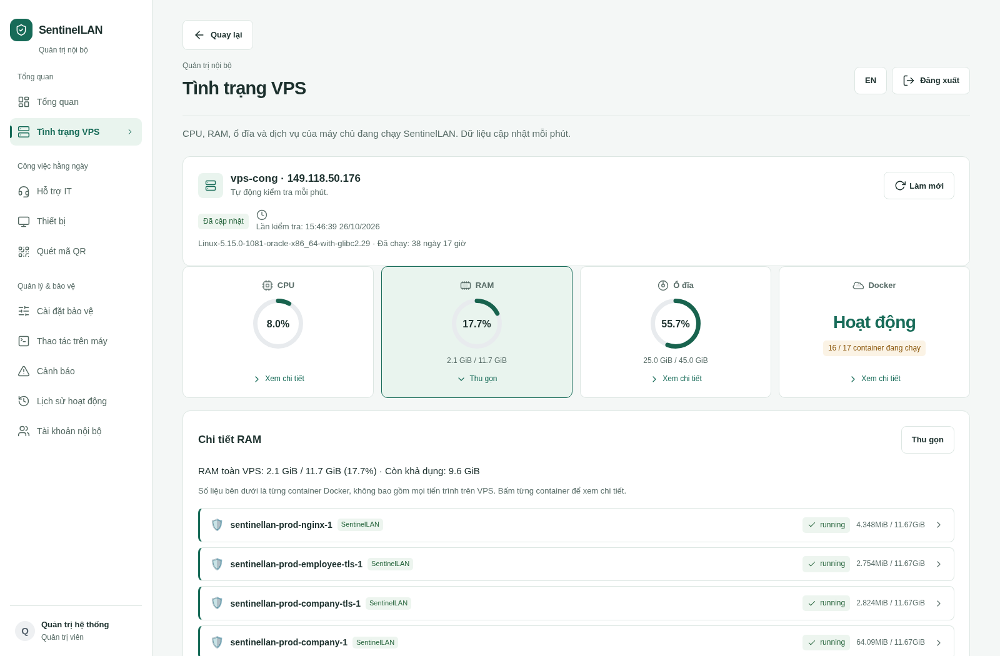
Nguồn và checksum
https://manager.zney295.id.vn/company/vps
0522d24e48ec31d3a018e29e6e2bf456a82bb79394c68d07854dc7fad926cf88W30-vps-disk — Giám sát dung lượng theo thành phần và dịch vụ trên VPS
Admin · 2026-10-26T15:48:34.452000+07:00
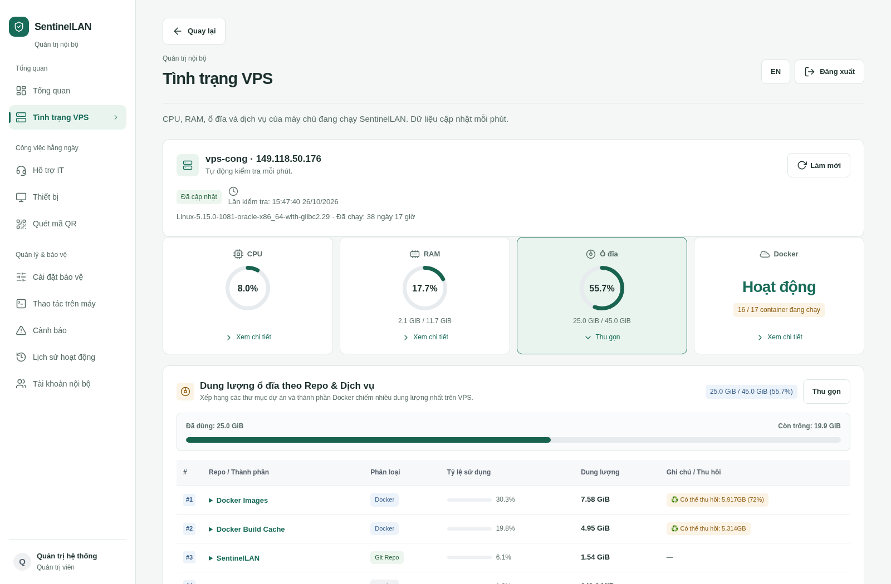
Nguồn và checksum
https://manager.zney295.id.vn/company/vps
c4fe033b91c0a4ed4e216615297888b43000b7564abeb3fd7a6c7e3a5ac29e32W31-vps-listening-ports — Danh sách cổng đang nghe trên VPS ở chế độ chỉ đọc
Admin · 2026-10-26T15:48:37.676000+07:00
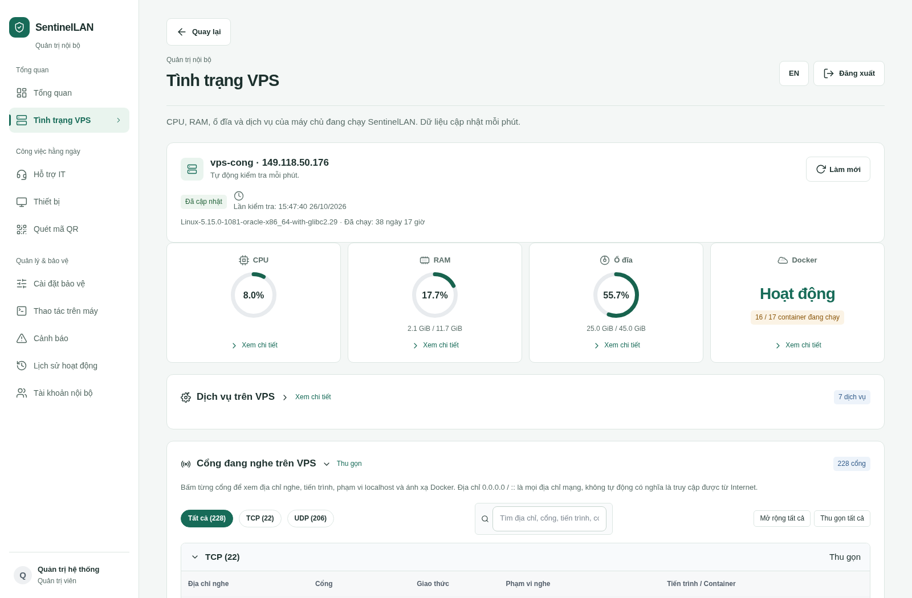
Nguồn và checksum
https://manager.zney295.id.vn/company/vps
da90e69e899ed96b31c66a0ae528d1efb6299bbf3503a4c623143a257b7d17b3W32-audit-operations — Audit ghi nhận phân công thiết bị, hỗ trợ và lệnh an toàn
Admin · 2026-10-26T15:48:51.748000+07:00
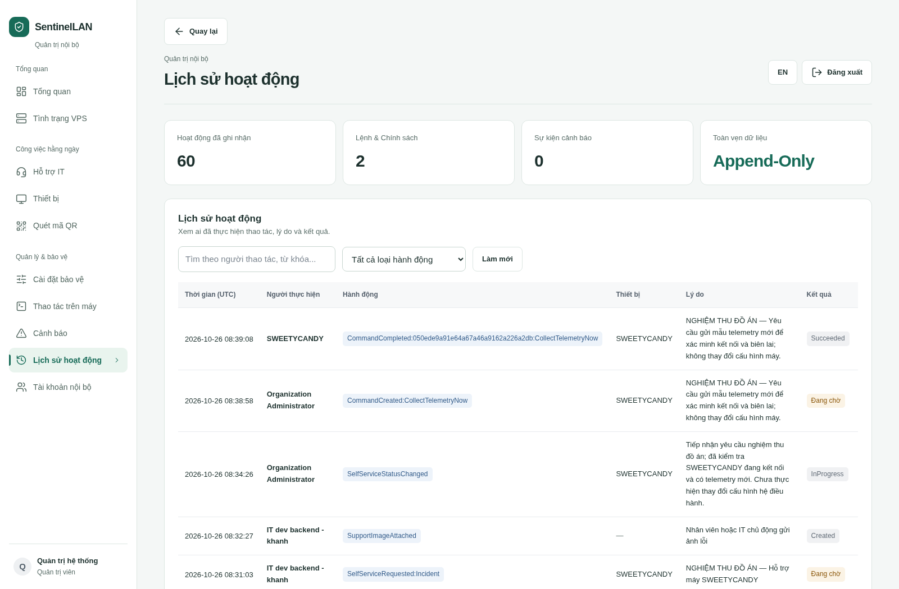
Nguồn và checksum
https://manager.zney295.id.vn/company/audit-logs
8c6747486b73f68c86b3d095061d75086e5e0b2a5e70e93ee5a8bb4a6172bfe6W33-audit-command-issued — Audit ghi nhận thời điểm ban hành lệnh có lý do
Admin · 2026-10-26T15:49:56.942000+07:00
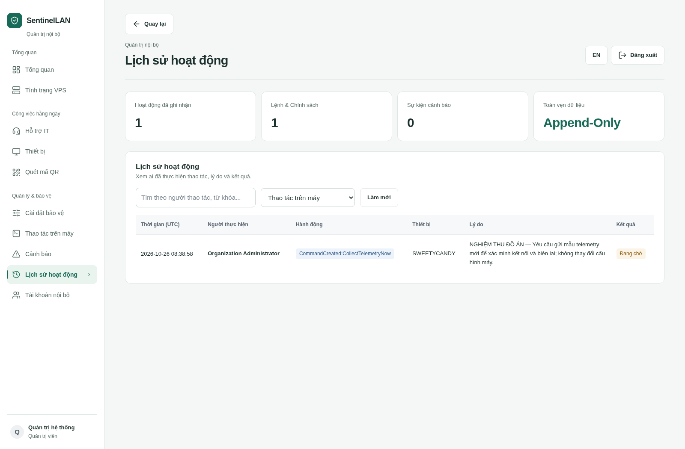
Kết quả cuối của lệnh nằm tại W22/W32; trạng thái Đang chờ ở đây là kết quả sự kiện lúc phát lệnh.
Nguồn và checksum
https://manager.zney295.id.vn/company/audit-logs
0b27b29ba95c7c3792e40131d11430086aa6489cf7ba440ee4b48a51de04c7f8W34-protection-policies — Danh sách cấu hình bảo vệ và giới hạn áp dụng hiển thị trên web
Admin · 2026-10-26T15:49:57.014000+07:00
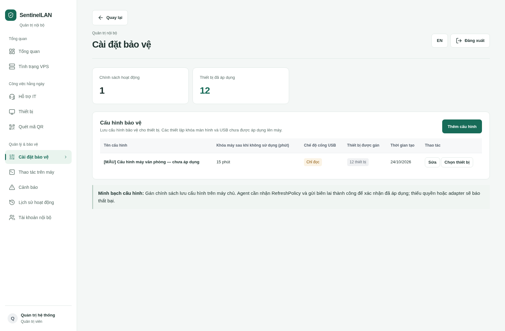
Có cấu hình mẫu; không gửi RefreshPolicy và không thay đổi chính sách Windows trong phiên này.
Nguồn và checksum
https://manager.zney295.id.vn/company/policies
1e516d61dceea98cbf34ae792636546acf7dc880542215f267edae11610787f4W35-device-alerts — Cảnh báo thực tế của SWEETYCANDY và các tình huống mẫu được đánh dấu
Admin · 2026-10-26T15:51:59.999000+07:00
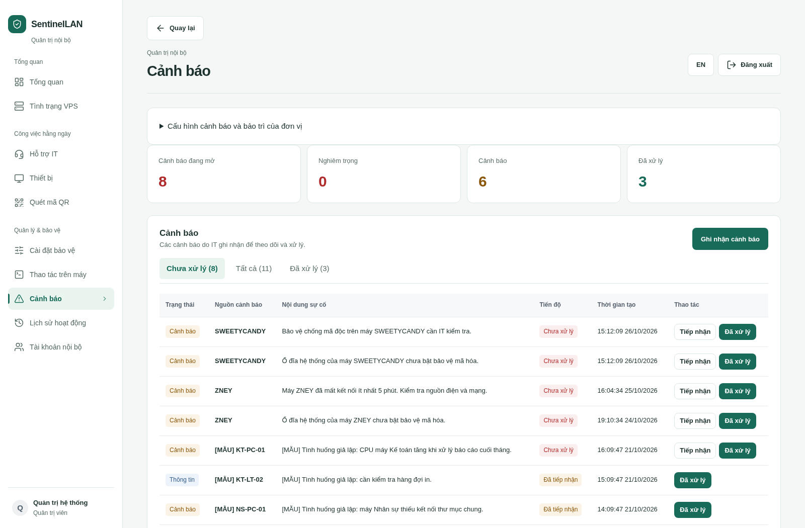
Không thay đổi trạng thái cảnh báo; chưa kết luận máy nhiễm mã độc từ nhãn Cần IT kiểm tra.
Nguồn và checksum
https://manager.zney295.id.vn/company/alerts
2ef6e77192f5a85f63c9d29282b99daa497eee3f81c1d80c3aabfec5f5506a37W36-employee-live-heartbeat — Employee quan sát heartbeat mới và phiên bản Agent 1.0.4
Employee · 2026-10-26T15:52:02.757000+07:00
Nguồn và checksum
https://manager.zney295.id.vn/employee/my-device
90d036ddc096a440a41136288a8219f47c3fe9a0fd4bdbccec130a2bcd14c908W37-device-use-history — Lịch sử sử dụng hiển thị của thiết bị SWEETYCANDY
Admin · 2026-10-26T15:53:33.087000+07:00
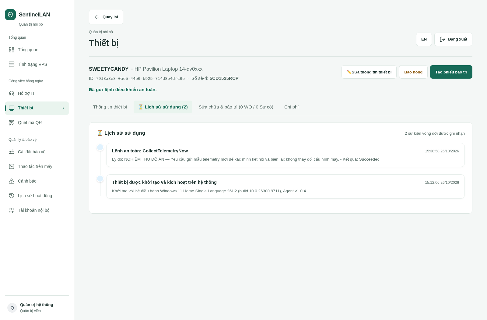
Ảnh giao diện lịch sử; sự kiện phân công đã được xác minh riêng trong audit W32.
Nguồn và checksum
https://manager.zney295.id.vn/company/devices/7918a8e8-0ae5-44b6-b925-714d8e4dfc6e
f07f5821e99918fbc4d4eaaeed497b2d0f430aefb847e05abe1103ad1965dd07W38-admin-received-image — Admin mở được ảnh đính kèm của yêu cầu hỗ trợ
Admin · 2026-10-26T15:53:36.299000+07:00
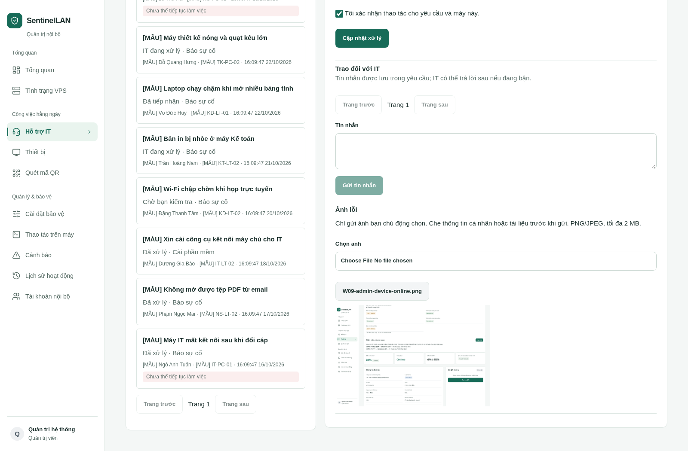
Nguồn và checksum
https://manager.zney295.id.vn/company/support
87e5d7296bd6004268209b5878f91275238c0865485ede41f9a8c25e2c0b7d6dW39-internal-accounts — Vai trò và trạng thái tài khoản nội bộ Admin và Employee
Admin · 2026-10-26T15:52:00.074000+07:00
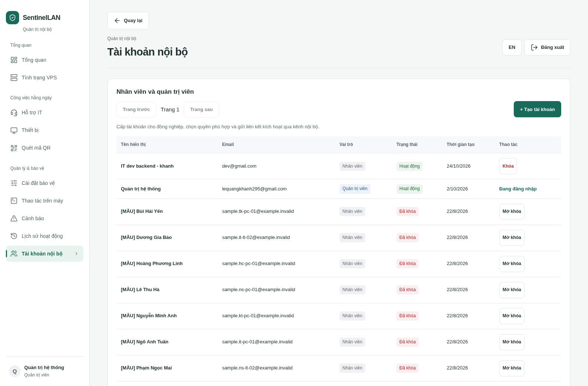
Nguồn và checksum
https://manager.zney295.id.vn/company/users
71a4038178d1b76dd208b28a366d4d765200b8cbd54f67c273190d6570fcc230W40-employee-heartbeat-next — Heartbeat mới ở lượt quan sát kế tiếp của Employee
Employee · 2026-10-26T15:53:38.487000+07:00
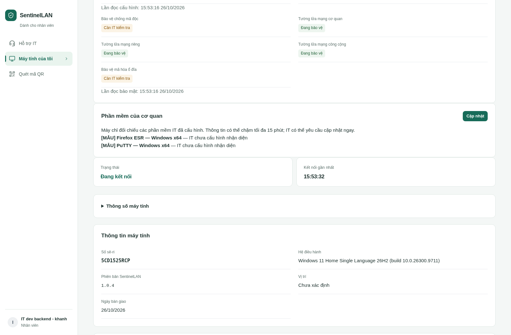
Nguồn và checksum
https://manager.zney295.id.vn/employee/my-device
b4d14f1ffdf8db4ffef092c22e4aaff30d9bdf7b06edc2c16d5226030ec028ad